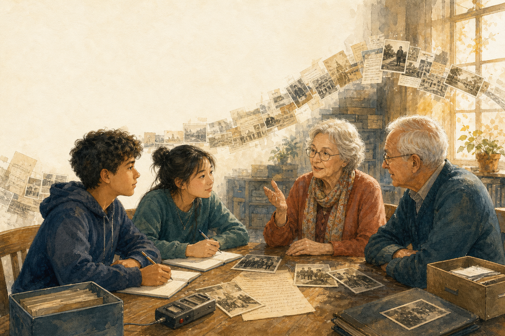

ERINNERN · ZUHÖREN · WEITERTRAGEN Geschichte bekommt eine Stimme Der Kurs erschließt Lebensgeschichten, prüft historischen Kontext und entwickelt daraus ein verantwortungsvoll gestaltetes Archiv.DOWNLOADBEREICH
Materialien für den Kurs
Die QR-Codes auf den Vorderseiten führen immer direkt zu diesem Bereich.
Hinweis zu den Interviews: Die ausgewählten Ausschnitte stammen aus dem Zeitzeugen-Portal. Persönliche Erinnerungen werden respektvoll behandelt und mit historischem Kontext verbunden. Der Bericht von Anna Mettbach enthält belastende Schilderungen aus Auschwitz.